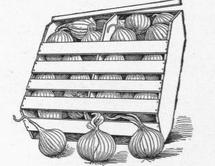

542. Marketing Onions
Description
This section is from the book "Vegetable Gardening", by Ralph L. Watts. Also available from Amazon: Vegetable Gardening.
542. Marketing Onions
The bulbs are usually separated into three grades: Primes, which include bulbs 1 1/4 inches in diameter and larger; seconds, which are from 3/4 inch to 1 1/4 inches in diameter; and picklers, which pass through a 3/4-inch screen.
Onions are marketed in a great variety of packages, as crates, bags, barrels and many different sizes and types of baskets.
Fig. 91. ONIONS PACKED IN BERMUDA CRATE.
543. Yields And Returns
Yields from seed sown in the open ground vary from 300 to 1,000 or more bushels an acre, but it is very rare that more than 1,000 bushels an acre are obtained by this method, and seldom that 900 to 1,000 are secured. Growers sometimes average 600, although 500 bushels is a good yield.
Estimates for the cost of growing vary extremely. A Michigan grower gives the following estimate for an acre:
Manure and hauling ............................ $15
Plowing and harrowing......................... 8
Seed ........................................... 8
Drilling ........................................ I
Cultivating ..................................... 14
Weeding ....................................... 16
Harvesting ..................................... 10
Topping....................................... 8
Total...................................... $80
Estimates often run higher than this, sometimes amounting to $150 or more an acre. For example, a successful grower in Massachusetts figures on spending $154. He uses two tons of fertilizer, costing $70 an acre. Gross receipts on this farm have run as high as $500 an acre, while they generally range from $200 to $300. The price a bushel varies from 50 to 80 cents, sometimes more. A net profit of $100 an acre is probably above the average.
In the growing of Prizetaker in the North the possibilities on limited areas are much greater. It is not difficult to grow 1,000 bushels an acre. This variety should average at least $1 a bushel. The estimates of cost and profits by T. Greiner are as follows:
Rent of land ................................... $6
Manure, 3 carloads, at $16...................... 48
Fertilizers ...................................... 25
Hauling and applying manure.................... 12
Plowing and harrowing ......................... 3
Marking ....................................... 1
Raising 180,000 plants............................ 30
Seed ........................................... 7
Transplanting .................................. 45
Cultivating and weeding ........................ 20
Pulling crop.................................... 3
Gathering, hauling, packing...................... 35
Barrels and crates .............................. 60
Total ......................................$295
Receipts
By 1,000 bushels, at $1, less freight, commission, etc. $800 Cost of production and packages................. 295
Net profit ..................................$505
544. Bermuda Onions
In the South and the Southwest the seed is sown in specially prepared outdoor beds from the middle of September to the middle of October. The seedlings are transplanted in the field from November 20 to January 10 or even later. (U. S. D. A., Farmers' Bulletin 354, p. 31). The bulbs are generally harvested before fully ripe, by the use of a one-horse plow, potato digger or cultivator with cutter-wing attachment. After cleaning, drying (in the field) and topping, the bulbs are graded and usually sent to market in folding crates, about 20 inches long, 12 inches wide and 12 inches deep. They weigh 6 or 7 pounds, cost about 18 cents and hold 50 pounds of onions. The general average yield is 10,000 or 12,000 pounds an acre; the average price, $1.60 a hundredweight. The buyer furnishes crates and loads the cars. The United States Department of Agriculture estimates the cost of production as follows:
Preparation of land and fertilizers ............... $70
Seed........................................... 9
Transplanting ................................... 20
Irrigation ....................................... 15
Cultivation and hand weeding.................... 16
Harvesting ...................................... 20
Interest on investment ........................... 20
Total ......................................$170
On heavily manured land the average yield is said to be about 16,000 pounds an acre, making gross receipts $256 an acre and profits $86. Much larger yields are often obtained, with profits correspondingly larger.
545. Growing Sets
Onion sets are very small matured bulbs of the same varieties as will grow to a large size when proper conditions are provided. These miniature bulbs are obtained by crowding, so that a dozen or more plants occupy the same space as one when large onions are desired. The crowded plants compete with each other for food, moisture and room in which to grow. Under such conditions it is impossible for the bulbs to attain large size.
The industry has reached the greatest development near Louisville, Ky., and Chicago, 111. There are from 600 to 800 growers of sets near Louisville, each cultivating from one to 50 acres. In the Chicago district the business is handled by 15 to 20 men, the acreage of each ranging from 20 to 400 acres.
Any good onion soil may be used for growing sets. It should be at least moderately fertile, fine and as free as possible from weed seeds. The seed should be drilled as soon as the ground can be prepared in the spring. In the districts mentioned the rows are 11 to 12 inches apart. Some highly intensive growers plant closer, but it makes cultivation more difficult. From 40 to 60 pounds of seed are used to the acre, and occasionally 10 or 15 pounds more. The seed is distributed in a broad drill by means of a spreader attached. Sometimes several hand drills are connected and drawn by a horse, but it is impossible to make the rows as straight as when the drills are pushed by hand. The fields must be cultivated as soon as the plants are up and frequently enough to keep the soil in good tilth. The number of cultivations varies from two to six, and of hand weedings from two to four.
With the crowded condition of the bulbs they mature earlier than if they had ample space. At Louisville harvesting begins in July and extends into August. The work is begun when one-third to one-half the tops are down. After loosening with a fork or an onion harvester, the plants are pulled by hand, the tops twisted off and the soil sifted out. Then the bulbs are placed in a barrel and taken promptly to the storage house, where the sets are spread 4 to 6 inches deep on trays and allowed to remain until sold. The cleaning before marketing is done by hand or power machine, which removes chaff and dirt. The shrinkage in bulk from harvest until the middle of February is from 25 to 30 per cent. For this reason some growers prefer selling at harvest, when prices are sometimes nearly as good as in the winter.
One hundred barrels to the acre is a good crop. The average is from 60 to 70. Harvesting and cleaning costs 50 to 75 cents a barrel. Prices are extremely variable, but the industry is regarded fairly profitable. White sets are in greatest demand.
546. Growing Picklers
Pickling onions are grown by the same method as sets, except that less seed is used. Twenty-five to 30 pounds an acre is sufficient. The bulbs range from 3/4 inch to 1 1/2 inches in diameter. Uniformity in size is very important.
Continue to:
Tags
plants, crops, gardening, cultivated, harvesting, food ,greenhouses, fertiliser, vegitables